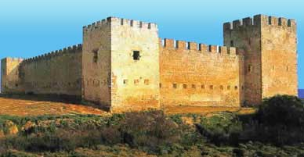

Το φραγκοκάστελο
 Στα νοτιοανατολικά των Σφακίων το Ενετικό Φραγκοκάστελο (Castel Franco), χτισμένο το 14ο αιώνα, με κατάλοιπα κοντινού αρχαίου οικισμού, χρησιμοποιήθηκε μέχρι και τα χρόνια της Τουρκοκρατίας. Η ηρωική θυσία του Ηπειρώτη οπλαρχηγού Χατζημιχάλη Νταλιάνη και των 338 ανδρών του σε μάχη με ισχυρές τουρκικές δυνάμεις (1828) τροφοδότησε τη λαϊκή φαντασία με θρύλους για τις ψυχές των σκοτωμένων ηρώων, που, σύμφωνα με τους ντόπιους, στοίχειωσαν στο κάστρο και εμφανίζονται σαν σκιές ορισμένες φορές λίγο πριν την ανατολή του ήλιου, εφόσον υπάρχει η απαραίτητη υγρασία στην ατμόσφαιρα. Πρόκειται για το ανεξήγητο φαινόμενο των Δροσουλιτών. | ||